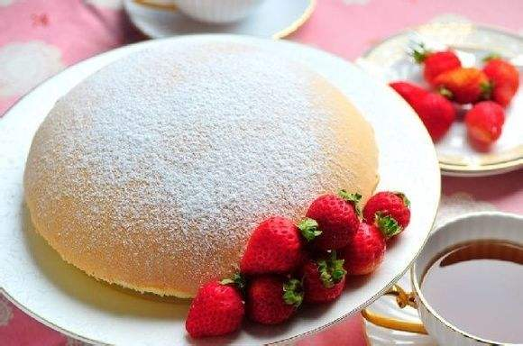

世界上最著名的10大蛋糕
德国黑森林蛋糕
黑森林蛋糕是德国最著名的传统蛋糕之一。它由巧克力蛋糕层、樱桃馅料和鲜奶油组成。蛋糕上还装饰有巧克力碎片和樱桃，味道丰富浓郁。
法国慕斯蛋糕
慕斯蛋糕是一种轻盈丝滑的蛋糕，由蛋白霜、奶油和巧克力或水果混合而成。它的口感柔软，味道丰富，常常用于庆祝特殊场合。
西班牙果仁糖蛋糕
果仁糖蛋糕是西班牙的传统糕点之一。它由杏仁、糖和蛋白制成，口感酥脆，甜度适中。通常在圣诞节期间食用。

日本长崎蛋糕
长崎蛋糕是日本的一种传统蛋糕，以其松软的口感和甜美的味道而闻名。它由蛋黄、蛋白、面粉和砂糖制成，常常作为伴手礼或节日食品。
阿拉伯乳酪蛋糕
阿拉伯乳酪蛋糕是中东地区的一种传统甜点。它由奶酪、酥皮和蜂蜜制成，口感丝滑，甜度适中。常常在节日或庆祝活动中享用。
英国糖浆松糕布丁
糖浆松糕布丁是英国的传统甜点之一。它由松软的糖浆松糕和甜蜜的黄油糖浆组成，口感湿润，味道浓郁。通常与鲜奶油或冰淇淋一起食用。
法国欧培拉蛋糕
欧培拉蛋糕是法国的一种传统蛋糕，以其层层叠加的薄饼和香草奶油而闻名。它的口感轻盈，味道香甜，常常作为特殊场合的甜点。
意大利提拉米苏
提拉米苏是意大利的经典甜点之一。它由咖啡浸泡的蛋糕、马斯卡彭奶酪和可可粉组成，口感丝滑，味道浓郁。常常作为意大利餐厅的招牌甜点。

美国波士顿派
波士顿派是美国的一种传统派，以其丰富的巧克力味和奶油馅料而闻名。它由巧克力饼底、香草或巧克力奶油馅料和巧克力酱装饰而成。
奥地利萨赫蛋糕
萨赫蛋糕是奥地利的一种传统蛋糕，以其松软的巧克力蛋糕和浓郁的巧克力奶油而闻名。蛋糕上还装饰有巧克力碎片和樱桃，味道丰富。